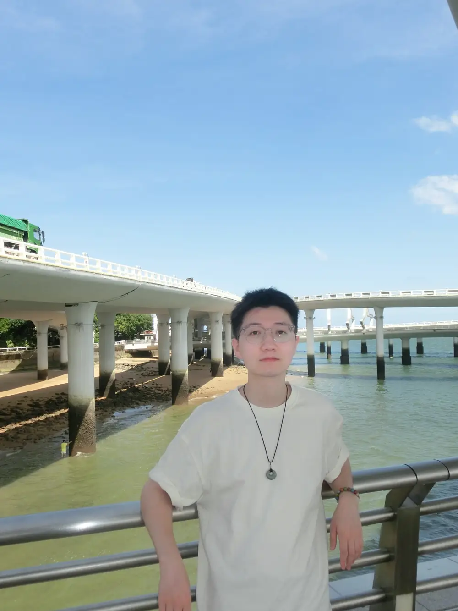
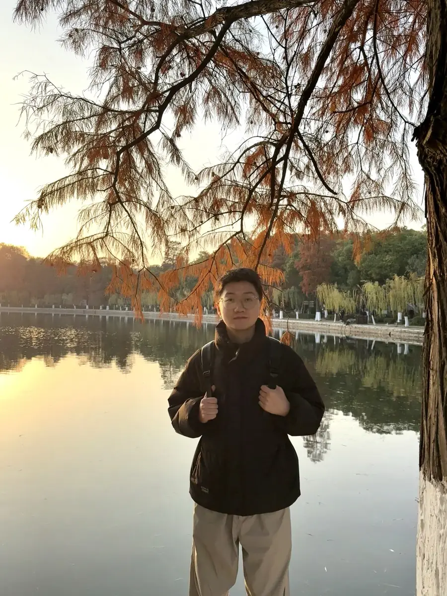
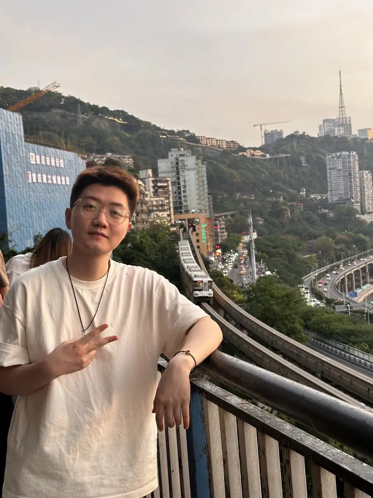
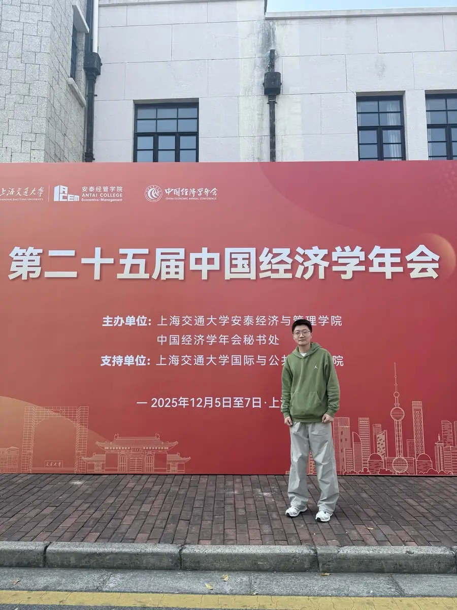

数据整理与分析复盘
熟悉使用 Excel、Python、SQL 处理结构化信息，能够围绕运营指标做基础清洗、分类整理、趋势观察和可视化表达， 支持日常复盘、阶段总结与策略优化。
中南财经政法大学数字经济硕士在读，具备金融学本科背景，正在寻找数据分析与运营方向岗位。 我习惯用指标拆解问题、用内容理解用户、用复盘推动策略优化，希望把分析能力真正落到业务增长结果上。

比起只会做表或者只会写内容，我更关心如何把数据观察转成实际动作，并让动作继续沉淀为可复盘的策略。
熟悉使用 Excel、Python、SQL 处理结构化信息，能够围绕运营指标做基础清洗、分类整理、趋势观察和可视化表达， 支持日常复盘、阶段总结与策略优化。
有新媒体内容策划与活动执行经验，理解从选题、脚本、投放到转化追踪的完整链路，能够站在用户和业务双重视角看待增长问题。
能把零散信息快速收束成清晰结构，形成报告、计划书和复盘文档。无论是行业研究还是活动总结，我都更偏向用框架与证据说话。
数字经济 / 硕士
正在进一步补足数字经济、数据应用与研究分析方向的系统训练，希望把学术训练转换为更扎实的业务分析能力。
金融学 / 本科
从整理到表达的基础工作流
稳定支持综合求职表达
下面这几段经历，是我目前最能代表“数据分析 + 运营执行 + 研究表达”三者结合的部分。
这段经历让我真正进入“内容生产 - 活动执行 - 数据复盘 - 策略调整”的完整运营循环。 我参与小红书、微信公众号、抖音等平台的内容策划，撰写升学干货、课程介绍、学员案例等原创推文与短视频脚本 20 余篇， 累计带来 10W+ 阅读量，并推动账号粉丝月均增长约 10%。
在这段经历中，我更多承担数据收集、行业整理和研究辅助角色，训练自己从海量公开资料里提取关键信息， 再将其转化为更容易判断与交流的分析框架。
这些校园经历持续锻炼了我的统筹、写作与策划能力，也让我逐渐形成“先搭结构、再补内容、最后优化表达”的工作习惯。

在日常里保持稳定、松弛和观察力，也让我更愿意把这种状态带进工作节奏。

对城市、行业和生活节奏的持续观察，也让我更习惯从环境变化里理解人的需求。

对研究、表达和持续学习保持投入，希望未来把分析思维更稳定地应用到实际业务中。
对我来说，钢琴不只是兴趣，更像一种调节节奏和保持专注的方式。把这段短视频放在页面下半部分， 不是想喧宾夺主，而是希望在专业经历与数据结果之外，也让人感受到我在表达、专注和长期投入这件事上的状态。
我是一个有个性、好奇心强、愿意独立思考的人，也会对环境、情绪和细节保持比较高的敏感度。 我常常会去追问一件事为什么成立、还能不能更好，也因此更看重那些真正能促进成长和内在发展的工作。
我同样比较理想化，也很重视与他人建立真实、深入、能够共同进步的关系。 无论是做分析、做运营还是做长期职业选择，我都希望参与的是既能推动自己进步，也能对他人产生积极价值的事情。
如果你愿意，也可以在方便的时候点开听一小段。它只是一个轻一点的小切口，让这份求职主页多一点真实感和交流感。